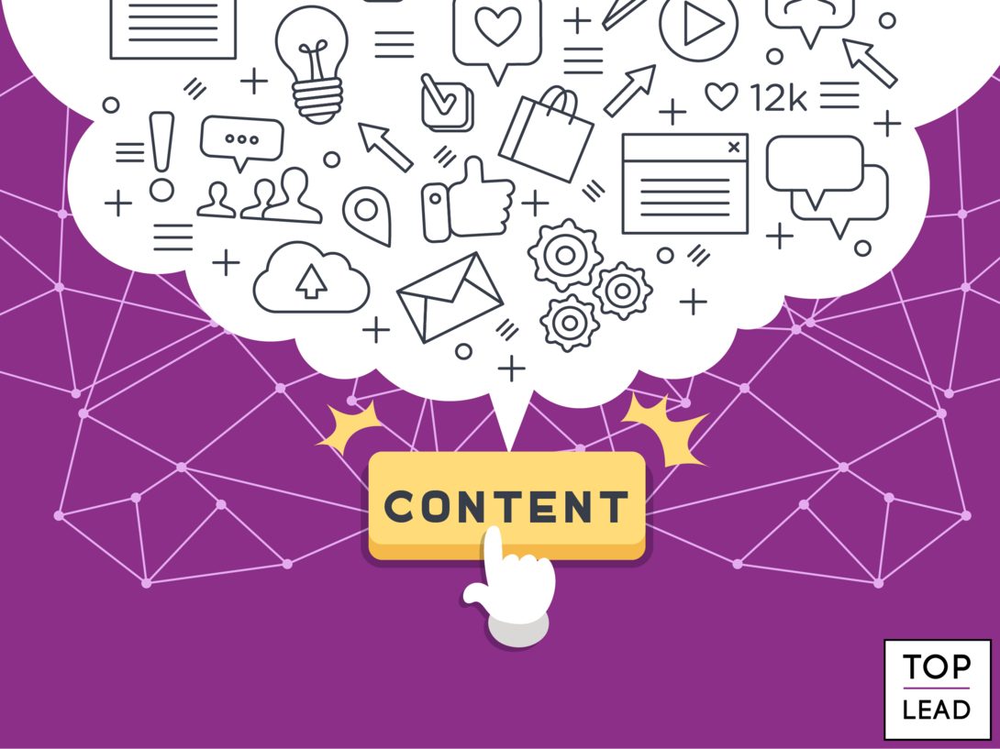

Що таке контент і як він допомагає привертати увагу аудиторії до вашого бізнесу
Яким буває контент
Ми розділяємо контент на два види: цікавий і нудний. Нецікавий намагаємося ніколи не створювати, якщо замовник, звичайно, не погрожує нам розправою у разі невиконання вимог (хоча і в цьому випадку до останнього намагаємося переконати людину не втручатися і дозволити нам добре виконати свою роботу). Цікавий контент у будь-якому випадку має бути корисним, правдивим, яскравим.
Багато фахівців досі розділяють контент на такий, що продає, навчальний, інформаційний і розважальний. Але мета будь-якого контенту — продати. Продати товар, продати себе як чудового автора, продати новий медіаресурс багатомільйонній аудиторії тощо. Текст, що продає, має бути й інформаційним, і повчальним, і дещо розважальним. Усе це характеристики цікавого контенту.
Також існує думка про те, що контент буває унікальним і неунікальним, а також безкоштовним і платним. Так от: немає ніякого неунікального контенту — є плагіат і копіпаст, яких не повинно бути на вашому сайті.
Статті
Статті бувають різних видів, але є те, що об'єднує їх: вони мають містити корисну для вашої цільової аудиторії інформацію. При цьому будь-яка людина, яка натрапила на ваш сайт випадково, повинна зрозуміти, чим ви займаєтесь, що пропонуєте і як це може стати їй у нагоді.
Це означає, що якщо сайт присвячений карбюраторам, то якими б очевидними і простими вони вам не здавалися, спершу треба написати про них, а вже потім торкнутися інших, більш складних моментів. Запам'ятайте: якщо на ваш сайт зайде дитина, то зі змісту вашого тексту вона має зрозуміти, що таке карбюратори.А ще залежно від концепції сайту можна сконцентрувати увагу на одному виді статей, але краще всього комбінувати декілька варіантів. Отже, якими ж можуть бути ці варіанти?
- Новини. Вони мають бути на вашому сайті, залишається тільки вирішити, в якому вигляді — це можуть бути свіжі ідеї, події та відкриття. До того ж регулярне оновлення контенту на сайті корисне для SЕО — Google з великим задоволенням індексує такі сайти, і ви природним шляхом піднімаєтесь у списку видачі за запитом "купити карбюратор у Києві".
- Огляди. Це те, що допоможе вашому клієнту відрізнити поганий карбюратор від хорошого. Чим детальніше і зрозуміліше ви розпишете все, тим більше вірогідності того, що відвідувач зацікавиться, почне вам довіряти і зробить замовлення. Створюйте чесні огляди, розповідайте не лише про плюси, але й про недоліки, та не забувайте пропонувати альтернативу зі свого ж прейскуранта.
- Інтерв"ю. Якщо у вашій галузі є визнані фахівці й знавці карбюраторів, обов'язково візьміть у них інтерв'ю і розмістіть у себе на сайті. Це залучить нових відвідувачів, допоможе утримати постійних і різко підвищить рівень довіри до вашої компанії, звичайно, якщо фахівець хороший.
- Майстер-класи. Ще один варіант контенту, здатного залучати масову аудиторію. Розкажіть людям, як зібрати хитрий прилад самостійно, покажіть покроковий майстер-клас, демонструйте фотографії процесу.
Колонки експертів
В якості платформи для блогу можна вибрати як окрему сторінку свого сайту, так і один з безлічі варіантів спеціальних блогових сервісів. Але краще створити окремий сайт-блог, на який можна буде залучати аудиторію за допомогою різних маркетингових інструментів.Обов'язково треба зважати на специфіку контенту для блогів: теми — актуальні й небанальні, в них завжди має бути думка автора блогу, і якщо дозволяє тематика, непогано використовувати гумор. Також потрібно спілкуватися з гостями в коментарях, тому що це основна ідея, те, заради чого ви все затіяли.
Якщо немає ні сил, ані бажання або можливості вести власний блог, можна обмежитися гостьовими постами. Для цього потрібно буде домовитися з нішевими блогерами, що вони розмістять написаний вами пост у своєму блозі. Звичайно, при цьому варто вибирати тих, хто пише на потрібну вам тематику, тому що інформація про карбюратори в б"юті-блозі може збентежити відвідувачів. Хоча іноді провокаційний контент може давати неймовірні результати!
Відеоконтент
Відео зручне тим, що сприймається простіше і краще за текстовий формат. Наочність — це відразу "плюс стоп"ятсот" до довіри користувача.Ролики можуть бути різними, починаючи від стандартних рекламних, приклади яких ми всі бачили по телевізору. Великий попит мають навчальні відео: користувачі часто шукають, як зробити те або інше, і подібні відео — шанс відповісти на найактуальніші питання і тут же запропонувати безпосереднє або альтернативне вирішення проблеми. Таке відео можна поєднувати зі статтею з майстер-класом. Оглядові відео варто комбінувати з тематичними статтями, а рекомендаційні чудово підійдуть для блогів.До того ж відео може знайомити користувача з вашою компанією, тобто, іншими словами, воно може стати головним промоінструментом вашого бізнесу.